Worked in team to design LIDAR system based on open-source design for research group.
Worked in team to design LIDAR system based on open-source design for research group.
Worked in team to design LIDAR system based on open-source design for research group.
Built a scanning motorized mirror platform to reflect a laser’s light around vicinity.
Used rotary encoder to record real time speed of moving mirror and in creating 2D point cloud map.
Analyzed PCB design files with Altium Designer and started work on new PCB design.
Designed a model that informs the user through sensors with a vibration motor and a buzzer. Applies AI, integrates real-time data from other users and Google Maps API to predict dangerous areas in the user’s vicinity.
Built working prototype with materials team had on hand since the organizers coud not provide materials due to limited funds for this hackathon iteration: Arduino, wires, 2 Piezo buzzers, 2 breadboards,1 IR sensor, 1 ultrasonic sensor and a battery pack.
Crystal Radio
Worked on building a crystal radio receiver with a Phillmore crystal earpiece for the initial audio output and a LM386 power amplifier integrated circuit (IC) will be used to provide sufficient power to a speaker for the final audio output.
ASIC Validation
As an ASIC validation researcher at Texas A&M, I worked on validating an Application Specific Integrated Circuit (ASIC) with guidance from my mentor every week.
The ASIC is designed to detect alpha particles and I have read through the specification document to learn the requirements to validate the ASIC.
To validate the ASIC, I would use a Printed Circuit Board (PCB) to interface the ASIC with my computer.
During my time on this project, I validated the connections on the PCB with a multimeter, and generated the clock and reset waveforms that would be used to drive the ASIC chip with an Arduino Mega.
Solved logic-level voltage compatibility issue with a Texas Instruments 74LVC245 Logic Level Voltage Shifter integrated circuit.
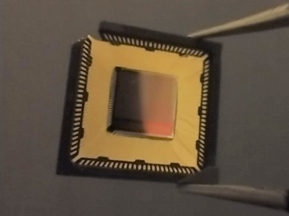
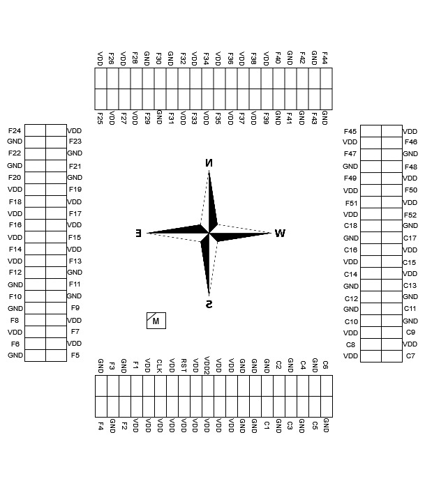
RoboMaster Robotics
In RoboMaster Robotics, I programmed a function to deliver power to the motors turning the wheels on our Standard robot in a three-member team within the given timeline of two weeks and pushed the new code to our GitHub repository.
Over the winter break, on my own initiative, I then helped my supervisor debug the function as he executed the updated code on the Standard robot.
In the summer of 2021, I volunteered as a boarder referee for the Robomaster's robotics competition.
Aggies Invent for the Planet 2020
Designed the front-end for an app called EZ-Vac at an Aggies Invent Event.
Plans an optimal evacuation route for an individual with the Google Maps API during a flood or earthquake based on user-submitted data and data from the FEMA database.
EZ-Vac would also be designed to work without internet by texting screenshots of the route with the Twilio API.
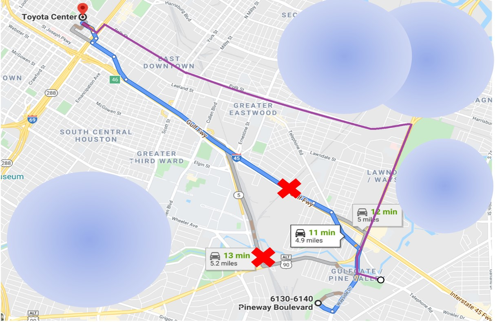
MVP Dashboard Application
Developed a full-stack MVP web application with Flask, HTML, CSS, and JavaScript at PCCI.
Company users were authenticated when signing in to the web application with the Microsoft Azure Active Directory service and automatically added to a table in a PostgreSQL database after their first time logging in.
The website pages were updated by the Guinocorn application server before being sent to the client's browser via the Ngninx reverse proxy server.
The Gunicorn WSGI and Ngnix reverse proxy servers were configured on an Azure Linux VM.
The PostgreSQL database was hosted on a different Azure VM.
Bootstrap was used to minimally style the web pages.
The IT infrastructure engineer provisioned the Azure Virtual Machines and mostly configured the web servers on the VM designated for processing client requests.
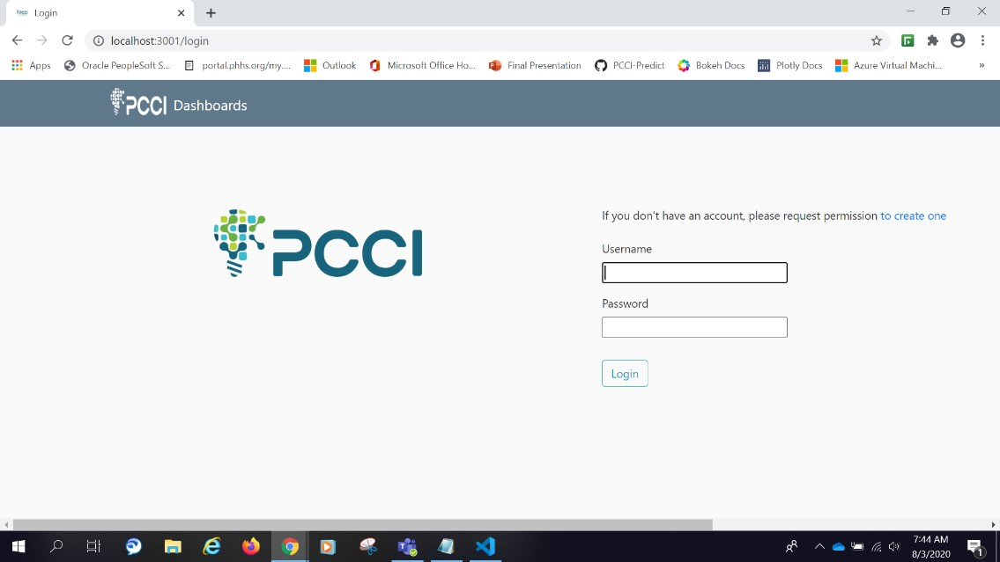
IEEE TAMUmake
Created a Checkmate algorithm in Python 3.6 for a virtual chess board as part of a four-member team in IEEE's hardware hackathon TAMUmake.
Also, helped to program a four-digit seven display to be a timer with the Arduino IDE.
Also helped implement use of the OpenCV API to recognize chess pieces and their positions on the chess board from the pictures taken by the Arduino camera shield.
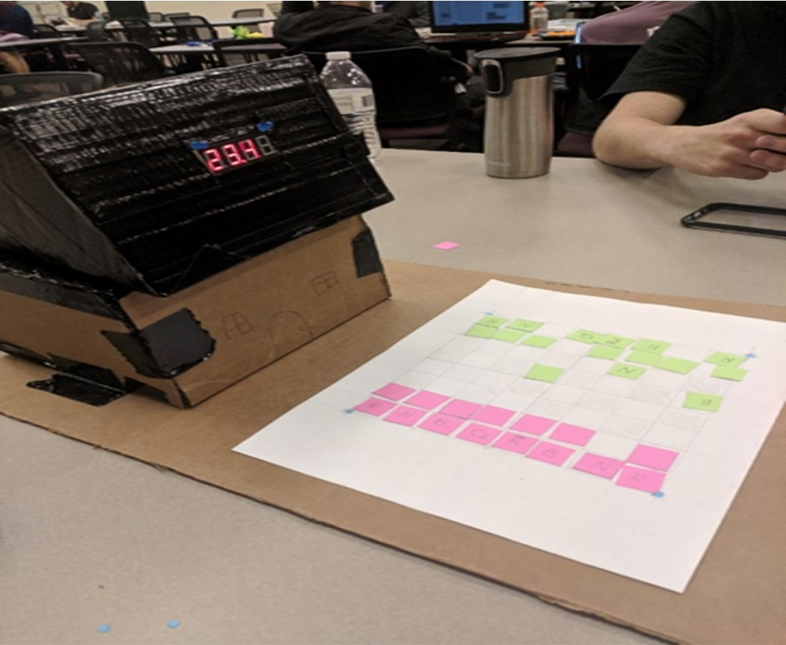
Personal Website
Designed several HTML pages with external CSS to accurately portray my skills and experiences and displayed on the web with GitHub pages as recommended by one of my mentors.
Learned how to use HTML, and CSS proficiently to make my website more interactive and better styled.
 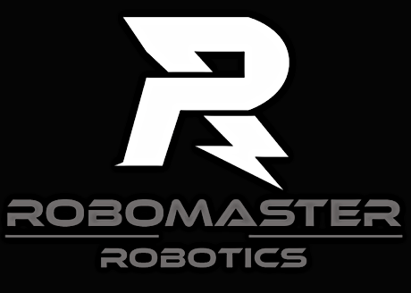
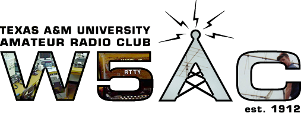
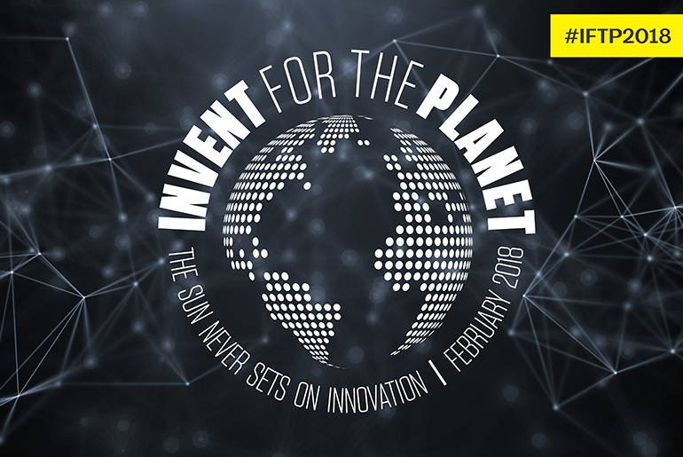
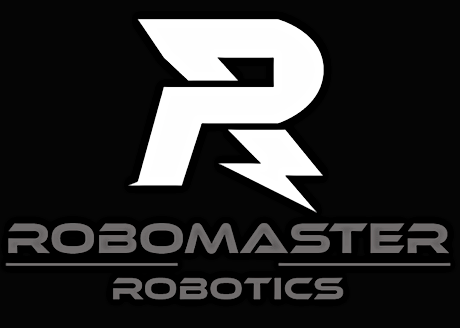
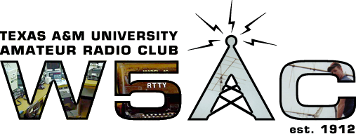
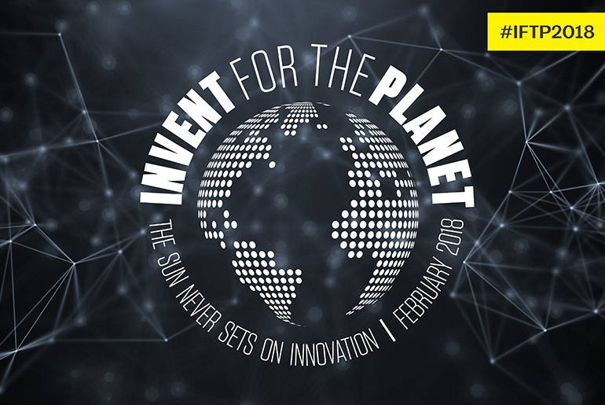